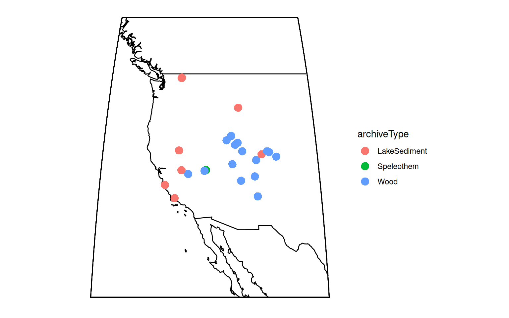
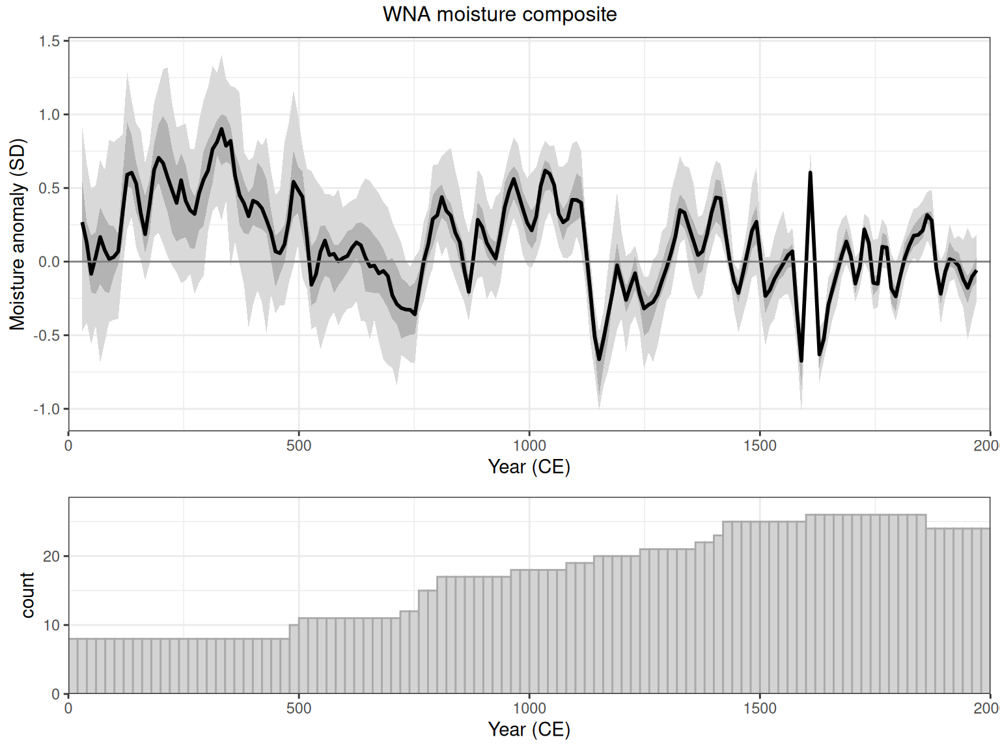
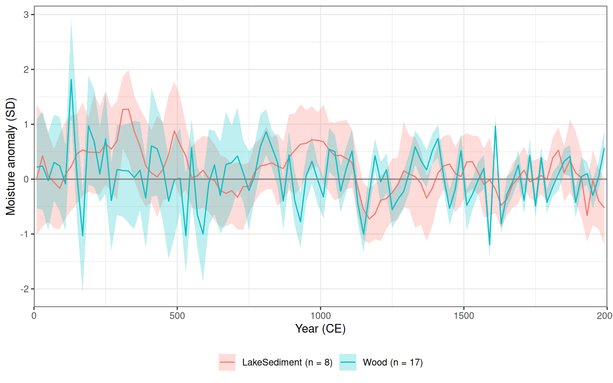

library(lipdR)
library(compositeR)
library(dplyr)
library(ggplot2)
source(here::here("R/helpers.R"))
checkVersions()
region <- "WNA"2. Regional composites with compositeR
A moisture composite for western North America
A composite averages many records into one regional series. Done carefully, it keeps the shared signal, reduces the noise of individual records, and carries the uncertainties of the inputs through to the result. compositeR does this with ensembles: it repeats the whole bin, standardize and average procedure many times, each time drawing different age models and proxy values, so the spread of the results shows the uncertainty.
Here we build a composite of moisture-sensitive records from the IPCC AR6 region WNA (western North America), for the Common Era. The region is set in one place, so you can rerun everything for another region.
Setup
h2kTimeseries() does the steps from tutorial 1 in one call: read the compilation, keep the 0.9.0 members, add AR6 regions, and put every record’s time in years CE.
h2k <- h2kTimeseries()
nrow(h2k)[1] 716Choose the records
A composite only makes sense if the records measure the same thing, and if they all point the same way. Hydroclimate2k records are interpreted as many different variables (precipitation, streamflow, P/E, PDSI, lake level, …), and a large value means “wetter” for some and “drier” for others. For example, lake-water d18O usually rises when evaporation exceeds precipitation.
The interpretations handle this (see tutorial 1): variable says what a record measures, and direction says whether larger values mean more or less of it.
First, choose the records that measure moisture. The interpretation vocabulary isn’t standardized yet, so isMoisture() (in R/helpers.R) recognizes the variants. It is TRUE for variables like precipitation, streamflow, P/E, PDSI and lake level, and FALSE for temperature, the isotopic composition of precipitation, and missing interpretations:
isMoisture(c("streamflow", "P/E", "Precipitation amount", "temperature", "precipitationIsotope", NA))[1] TRUE TRUE TRUE FALSE FALSE FALSElipdR::filterByInterpretation() applies it to each record’s interpretations. We want the records whose main climate interpretation is moisture, so we look only at climate-scoped interpretations (scope = "climate"), and only at the top one of those (match = "primary"). With the default, match = "any", a record whose second climate interpretation mentions moisture would be included too.
Then the direction. compositeR::interpDirectionSign() reads a record’s interpretation direction and returns +1 if larger values mean more of the variable, -1 if they mean less, and NA if the direction is missing or ambiguous. It accepts “positive”/“negative” and “increase”/“decrease” in any capitalization.
Ideally, all the directions would be “positive” or “negative”, a curation to-do.
Select the region’s moisture records, one per dataset, and keep the Common Era:
recs <- h2k |> #Start with the full tibble
filter(ar6_region == region) |> #filter to this region
filterByInterpretation(isMoisture(variable), scope = "climate", match = "primary") |> #keep records interpreted as moisture
mutate(direction = purrr::map_dbl(seq_len(n()), \(i) compositeR::interpDirectionSign(pick(everything())[i, ]))) |> #+1 or -1
filter(!is.na(direction)) |> #drop records without a usable direction
distinct(dataSetName, .keep_all = TRUE) |> #drop duplicates
clipTime(0, 2000) |>
filter(purrr::map_int(time, length) > 20) #only look at those with more than 20 datapoints in the interval
recs |>
select(dataSetName, archiveType, paleoData_variableName,
interpretation1_variable, interpretation1_direction, direction)The table shows the interpretation1_ columns, but the scope matters. interpDirectionSign() also uses the climate-scoped interpretation by default. Abbott.Hiner.2016 shows why: its first interpretation is environmental (winter wetness and/or runoff intensity, with no direction), and its second is climatic (winter precipitation, positive), so it gets +1. getInterpretations() shows all of a record’s interpretations:
getInterpretations(filter(recs, dataSetName == "Abbott.Hiner.2016")) |>
select(dataSetName, number, scope, variable, direction)
ImportantLook at what you’re compositing
isMoisture() is a convenience for handling our currently imperfect metadata. It’s not ideal. Read the table above, and check the interpretations of any record you aren’t sure about. Watch out for drought indices: “drought, positive” means larger values are drier, so isMoisture() leaves them out rather than let them point the wrong way.
lipdViz::mapTs(recs, color = "archiveType", size = 4,
lat.range = c(25, 55), lon.range = c(-130, -100))
Records in different units
The records are in different units (mm of streamflow, permil, tree-ring indices), some were dated in yr BP and some in years CE, and half of them point the “wrong” way. We don’t need to fix any of this before compositing:
- Units: the standardization step (below) puts every record in standard-deviation units, and we give the uncertainty in standard deviations too (
uncUnits = "sd"). - Time:
compositeEnsembles()reads each record’stimeand its scale, and puts it on the scale given bytime.units. Here that’s"CE", sobinvecis in years CE. (Withouttime.units, it uses the scale the records share, or yr BP if they differ.) - Direction:
compositeEnsembles()flips records with a negative direction whenalignInterpDirection = TRUE(the default), usinginterpDirectionSign().
It also takes the tibble directly. You can pass a lipdR timeseries list from extractTs() instead.
Build the composite
compositeEnsembles() repeats these steps nens times:
- Bin each record onto a common time axis (
binvec). The defaultbinFun,sampleEnsembleThenBinTs(), first perturbs each record: it adds autocorrelated noise to the values (uncVar = 0.5withuncUnits = "sd": half of each record’s standard deviation, whatever its units), and it simulates age uncertainty with the Banded Age Model (BAM), except for tree rings and documents, whose ages are exact. Records with a negative interpretation direction are flipped at this step. - Standardize the binned records with
stanFun. HerestandardizeOverInterval()gives every record mean 0 and standard deviation 1 over 1600 to 1950 CE, a period all the records cover. - Average the standardized records in each bin.
binvec <- seq(0, 2000, by = 20)
set.seed(2026)
comp <- compositeEnsembles(recs,
binvec = binvec,
nens = 50,
time.units = "CE",
uncVar = 0.5,
uncUnits = "sd",
stanFun = standardizeOverInterval,
interval = c(1600, 1950),
verbose = FALSE)nens = 50 keeps this quick. Use several hundred for real work.
The standard deviation behind uncUnits = "sd" is the SD of each whole record, over the years we kept. A record with a large trend has a large SD, so it gets more noise. If you know a record’s measurement or calibration uncertainty, put it in a column and name that column in uncVar instead (in the record’s own units).
NoteAbout the age uncertainty
BAM was designed for layer-counted records, such as corals and varves. For radiometrically dated lake and speleothem records it gives only a rough idea of age uncertainty. If a record has an age ensemble (see tutorial 3), put it in an ageEnsemble column (yr BP, as a matrix), and compositeEnsembles() will draw from it instead.
Tree rings and historical documents are precisely dated, so their ages are used as they are. The exactAgeArchives argument of sampleEnsembleThenBinTs() controls which archive types this applies to.
Plot it
plotComposite() draws the composite’s ensemble as quantile ribbons, plus how many records contribute to each bin. The composite knows its time scale (comp$timeUnits), so plotComposite(comp) gives a forward year CE axis. Here we take the two panels separately (combine = FALSE), so that we can give them matching axes and labels:
panels <- plotComposite(comp, combine = FALSE)
ce_axis <- scale_x_continuous("Year (CE)", limits = c(0, 2000), expand = c(0, 0))
egg::ggarrange(
panels$compositeEns + ce_axis + labs(x = NULL, y = "Moisture anomaly (SD)") +
geom_hline(yintercept = 0, color = "grey50"),
panels$dataUsed + ce_axis,
ncol = 1, heights = c(2, 1),
top = paste(region, "moisture composite")
)
summary() gives the composite’s quantiles in each bin:
comp_summary <- summary(comp)
head(comp_summary)Notice the droughts in the 1100s and in the late 1200s, and the wetter conditions before about 1100 CE. Western North America’s medieval megadroughts are well known from tree rings, and here lake records support them too. The uncertainty widens before 800 CE, where fewer records contribute.
Does every archive agree?
A useful check is to composite each archive on its own. If trees and lakes tell different stories, that is worth understanding before you trust the combined result.
by_archive <- purrr::map(c("Wood", "LakeSediment"), function(a) {
sub <- filter(recs, archiveType == a)
set.seed(2026)
ca <- compositeEnsembles(sub,
binvec = binvec,
nens = 50,
time.units = "CE",
uncVar = 0.5,
uncUnits = "sd",
stanFun = standardizeOverInterval,
interval = c(1600, 1950),
verbose = FALSE)
s <- summary(ca)
s$archive <- paste0(a, " (n = ", nrow(sub), ")")
s
}) |>
bind_rows()binning and aligning the data. This may take some time depending on the number of records (n = 17) and number of ensembles (n = 50)
binning and aligning the data. This may take some time depending on the number of records (n = 8) and number of ensembles (n = 50)names(by_archive)[2:4] <- c("lo", "med", "hi")
ggplot(by_archive, aes(x = age, fill = archive, color = archive)) +
geom_ribbon(aes(ymin = lo, ymax = hi), alpha = 0.25, color = NA) +
geom_line(aes(y = med)) +
geom_hline(yintercept = 0, color = "grey50") +
scale_x_continuous("Year (CE)", limits = c(0, 2000), expand = c(0, 0)) +
labs(y = "Moisture anomaly (SD)", fill = NULL, color = NULL) +
theme_bw() +
theme(legend.position = "bottom")
Try this
- Change
regionat the top to another AR6 region (NWN,ENA,MED,EAS, …) and rerun everything. Check the record table first. - Use
stanFun = standardizeOverRandomIntervalwithduration = 300, searchRange = c(1000, 1950), which picks a different standardization window for each ensemble member, so that the choice of window becomes part of the uncertainty. - Try
samplePct = 0.75, which leaves out a random quarter of the records in each ensemble member (a jackknife). - Weight records with
weights = "archiveType", so that each archive type counts equally however many records it has.